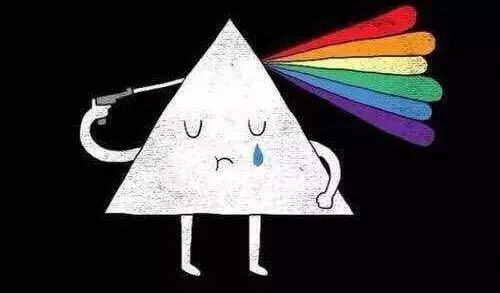
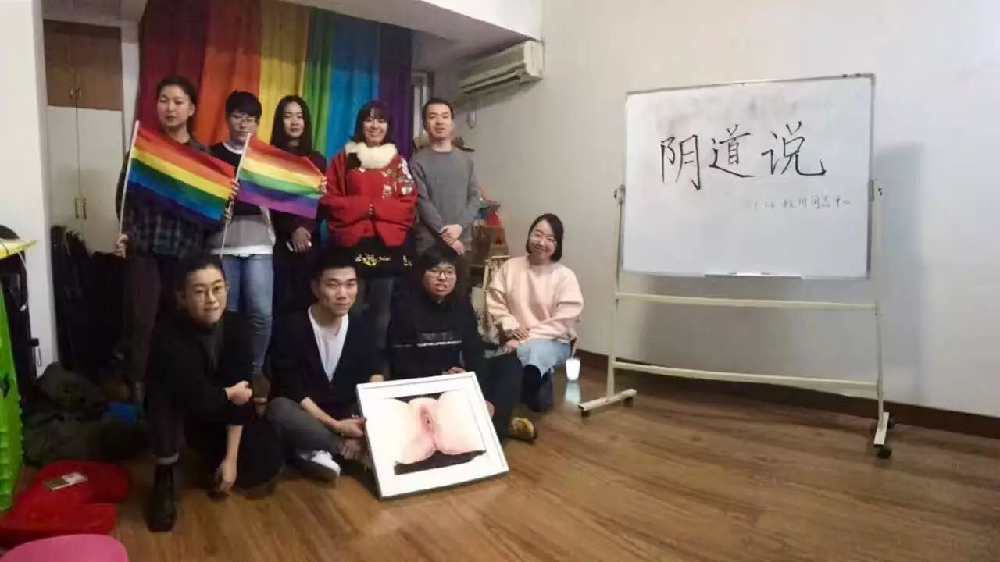

十六日活动 | 《男孩别哭》线下观影

亲爱的朋友
你知道11月25日是什么日子吗
你知道16日是指哪16日吗
你是否认为
亲密关系暴力只存在于
专偶制的异性恋婚姻关系中

你是否认为
性别暴力只是
由男性施加的、仅仅针对女性的暴力
啊
这位亲爱的朋友
看来你需要涨涨姿势

11月25日是“国际消除对妇女暴力日”，由11月25日至12月10日之间的16天，是消除亲密关系暴力的“十六日”。这期间，世界各地包会开展多样的倡导及教育活动，称为“十六日活动”。（详见11.25 | 消除对妇女的暴力日）
酷儿论坛一直积极倡导反对性别暴力
所以我们在11月26日举办了
《阴道说》剧本朗读会

· 《阴道说》剧本朗读会
然而
只搞一波活动
怎么能够表达我们对暴力的强烈谴责呢
要搞就要搞它二（百）波！
所以
本周六晚18:30（12月3日）
一起来中心观看《男孩别哭》吧
让我们一起抨击性别暴力
并对反家暴立法提出你的见解
（后台回复“幸福在哪里”可以查看中心位置哦）

当然
活动结束后也不要忘记
反对性别暴力与亲密关系暴力
每一天都是16日呀！